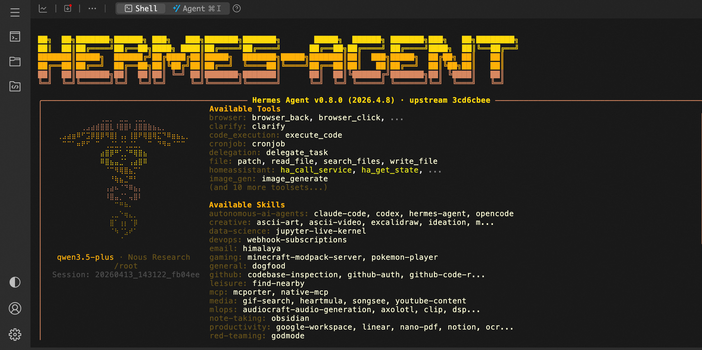

🤖 HermesAgent Service Overview
In April 2026, Nous Research proudly released Hermes Agent — a truly "alive" open-source AI agent. Say goodbye to fragmented chatbots. Hermes Agent runs in your private environment, featuring persistent memory and self-evolving capabilities. It can autonomously create skills, learn from every interaction, and perfectly reuse experiences in future tasks. Deploy once, evolve continuously. Hermes Agent understands you better with every use.
🚀 Deployment Process
-
Visit the ComputeNest HermesAgent Community Edition deployment link and fill in the deployment parameters as prompted:
-
After configuring the parameters, the system will automatically generate a cost estimate. Confirm the details are correct and click Next: Confirm Order.
-
On the order confirmation page, verify the instance information and costs, then click Create Now to start the automatic deployment.
-
After deployment is complete, remotely connect to the ECS instance.
-
Execute commands to interact with HermesAgent.
shell sudo su root hermes
📚 User Guide
For channel configuration, please refer to the HermesAgent Official Documentation. ff